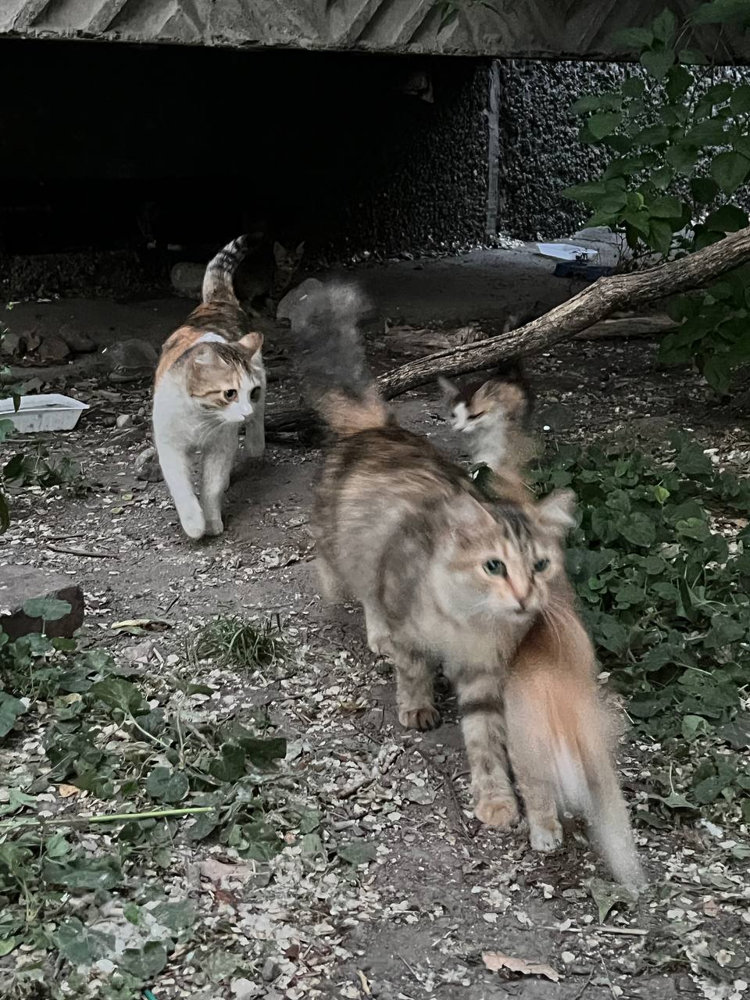
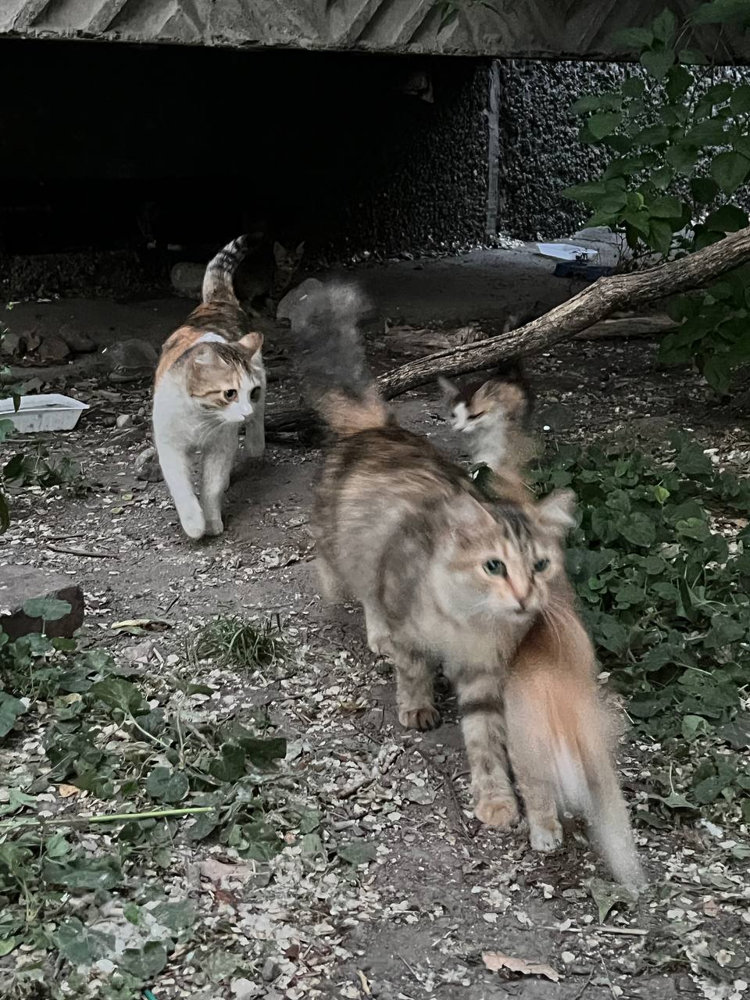

Информация обо мне:
Привет! Я - Айпери. Мне 18 лет. В моей жизни всегда есть место для творчества, исследований и новых вызовов. Я верю в силу оптимизма и постоянного роста как личности. Добро пожаловать в мой мир, где каждый день - новое приключение!
 
